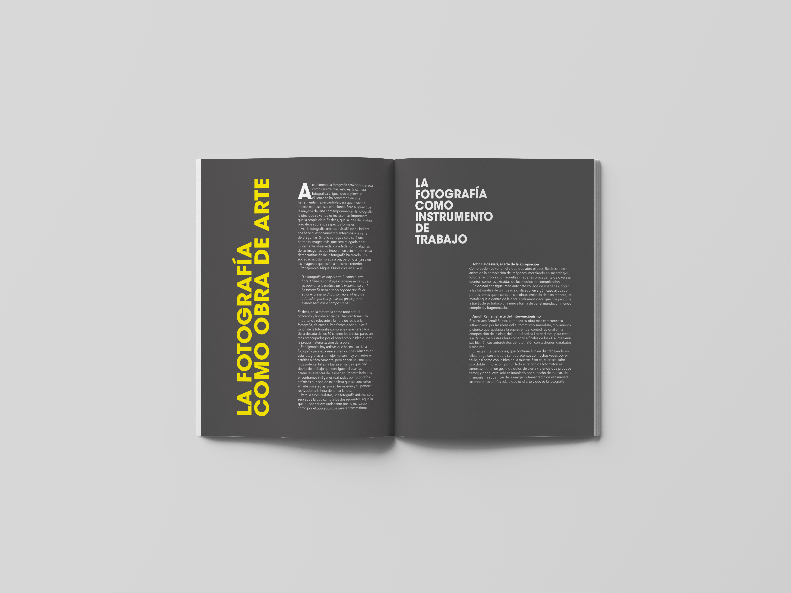
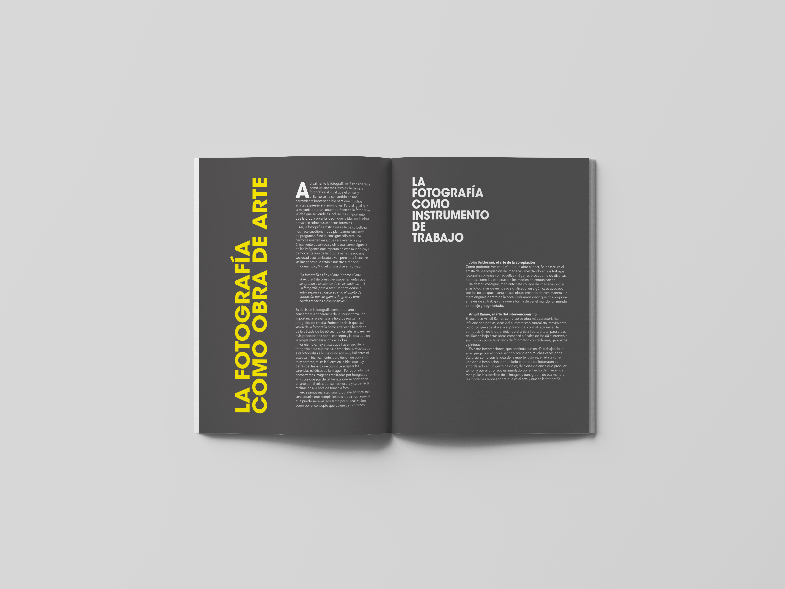
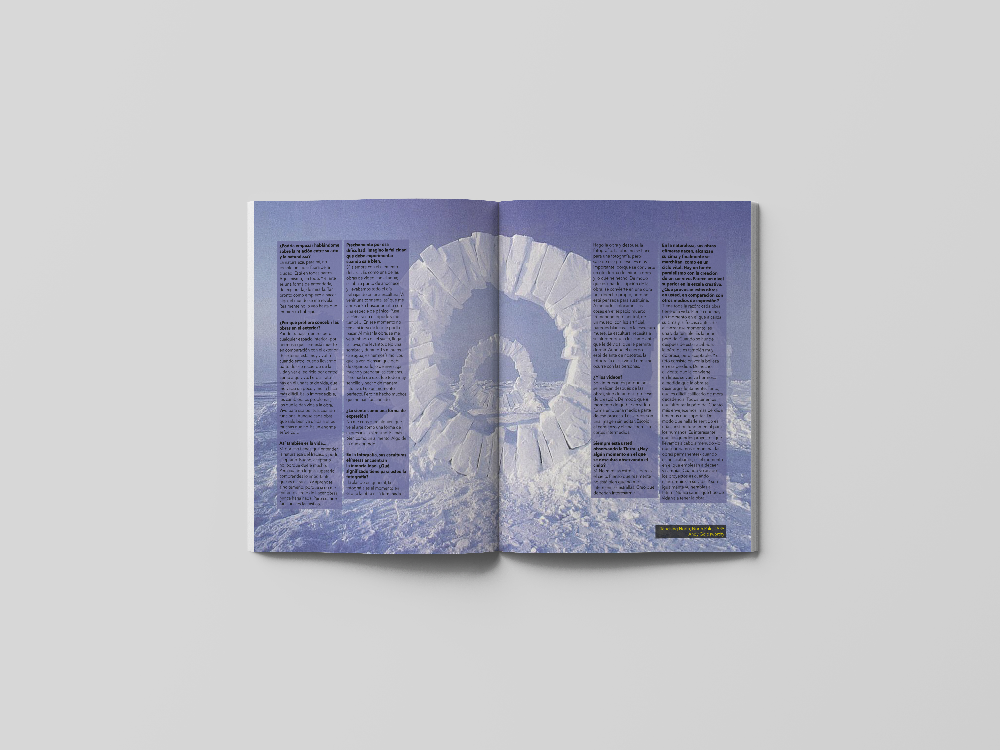
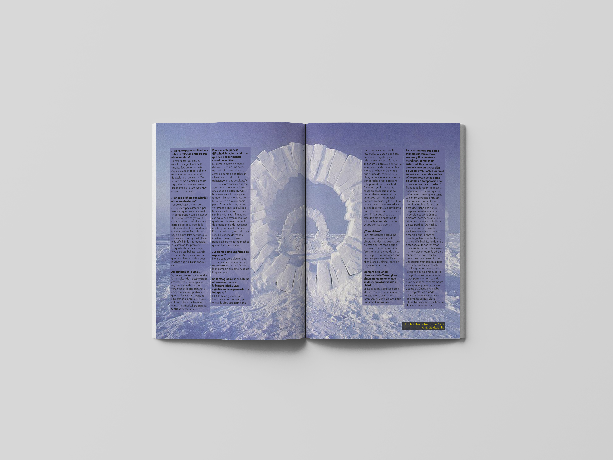
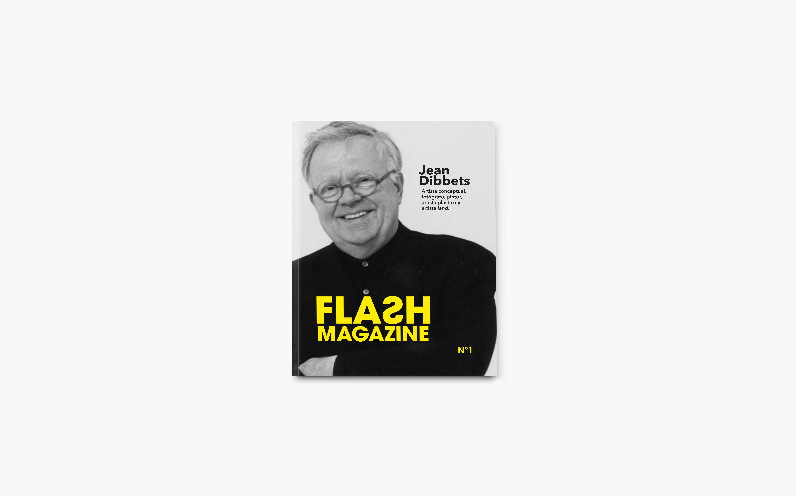
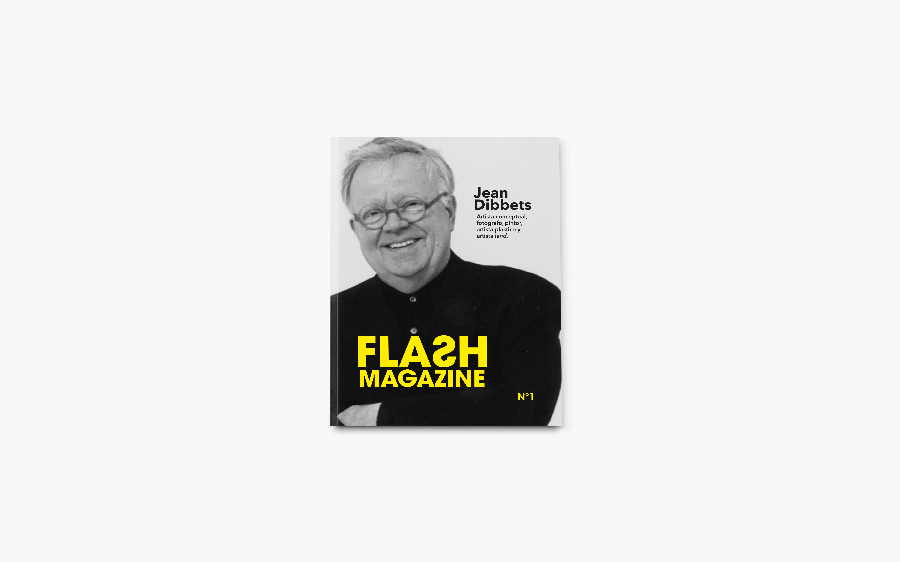

Flash Magazine
 


 

 


Este proyecto consistió en el diseño y realización de una revista. Esta revista debía tener en su contenido información sobre diferentes artistas de diferentes disciplinas y hablar sobre la fotografía, en mi caso los elegidos fuero Jean Dibbets (artista conceptual, fotógrafo, pintor, artista plástico y land art) y Andy Goldsworthy (land art), estos dos tienen en común que trabajan el "land art" pero como podemos observar Dibbets es un artista muy polivalente y polifacético. Como características, esta revista debía contener: publicidad, un índice, un artículo (el cual habla sobre la fotografía en diferentes ámbitos). Una entrevista (en este caso a uno de los artistas, Andy Gpldsworthy) y el nombre de la revista tenía que ser "Flash Magazine". En mi caso para la portada elaboré un logotipo que hace la función del título de la revista, el cual tiene un juego visual, lo realicé con la intención de que la "S" tuviese una forma que nos pudiese recordar en cierto modo a un rayo (que podría representar el flash de una cámara) sin perder la legibilidad de la palabra ya que con solamente verla del revés crea esa tensión que nos hace fijarnos en ella y que nos atraiga y nos preguntemos que está ocurriendo, esta "S" del revés representa este flash de la cámara por el namig de la revista, Flash Magazine.